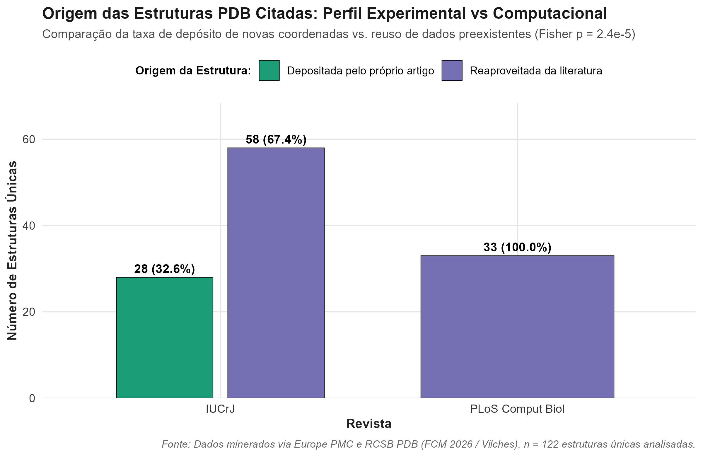
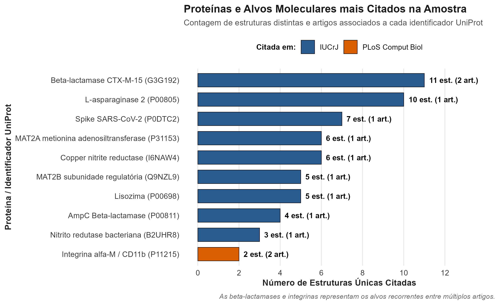

Do artigo ao banco de dados: estruturas do PDB citadas na literatura
Análise comparativa quantitativa entre periódicos experimentais (IUCrJ) e computacionais (PLoS Computational Biology) em 2026
Uso das estruturas do Protein Data Bank
O catálogo do PDB registra o histórico de depósitos, não o consumo atual da comunidade
- Mais de 220.000 estruturas depositadas: acervo cumulativo gerado desde 1971.
- Diferença de frequência de citação: muitas coordenadas permanecem sem novas citações após o depósito original; outras tornam-se referências contínuas.
- A citação na literatura: a menção explícita no texto do artigo indica quais estruturas participam ativamente da pesquisa recente.
- Objetivo: comparar como revistas experimentais e computacionais utilizam e produzem esses dados.
A mineração direta de textos completos permite quantificar os métodos, alvos e o reuso de estruturas no campo.
Dois perfis metodológicos na literatura
Comparativo entre produção experimental e modelagem computacional em 2026
Periódico de elucidação experimental de estruturas (raios X, Crio-ME). Hipótese: periódico produtor de novos depósitos.
Periódico de bioinformática, simulações moleculares e biologia teórica. Hipótese: periódico consumidor de estruturas preexistentes.
Critério: Os 10 artigos mais novos de 2026 de cada periódico com ao menos 3 códigos PDB citados (20 artigos no total).
Arquitetura do pipeline
Processo em linguagem R dividido em etapas modulares e independentes
- 00_selecionar_artigos.R: consulta à API da Europe PMC (acesso aberto e anotações PDB).
- 01_baixar_pdfs.R: download automatizado dos PDFs pelo bucket aberto da AWS S3 do PMC.
- 02_extrair_pdb.R: mineração de texto nos PDFs via
pdftoolscom regex e filtros de contexto. - 03_scraping_pdb.R: coleta de metadados no RCSB PDB via
rvestcom controle de taxa. - 04_banco_sql.R: modelagem relacional e carga no PostgreSQL (schema
pdb, 3FN). - 05_graficos.R: análises estatísticas e gráficos com
ggplot2.
Mineração textual e raspagem no RCSB
Soluções para os ruídos comuns de processamento em documentos científicos
- Acesso aos arquivos: o portal web do PMC limita requisições; contornamos utilizando o repositório aberto na nuvem AWS.
- Expressão regular para 4 caracteres: a busca direta por
[1-9][A-Za-z0-9]{3}captura anos (2026), aparelhos (LC-20AD) e unidades (100ms). - Filtro contextual: exigência de ao menos 1 letra nas 3 últimas posições e termos contextuais (*PDB, accession, entry*) até 6 linhas acima.
- Coleta responsável: atraso de 2s entre páginas, consulta incremental e fila para registros com erro 404 ou não liberados (
5WH0).
O termo
20AD indicava uma bomba cromatográfica Shimadzu citada no texto, removida pelo critério de validação.
O código
9YRD (RNA) foi citado em artigo de beta-lactamase no lugar de 9RYD; o pipeline preservou o registro documental original.
Modelagem relacional em PostgreSQL
Schema pdb estruturado em Terceira Forma Normal conforme o padrão da disciplina
- Convenção de tabelas: tabelas de referência com prefixo
ref_e tabelas de dados comtab_. - Chaves primárias: geradas por identidade (
GENERATED ALWAYS AS IDENTITY). - Relação N:M resolvida: tabela associativa
tab_entidade_uniprotpara ligar subunidades proteicas aos códigos UniProt. - Carga automatizada: script
04_banco_sql.Rcom a funçãotrocar_id()para foreign keys.
Depósito inédito versus reaproveitamento
Comparação dos DOIs confirma a separação entre geradores e usuários de dados
- IUCrJ: 34,1% das estruturas citadas foram depositadas pelos autores do próprio manuscrito (30 novas estruturas).
- PLoS Comput Biol: 0,0% de novas estruturas depositadas: 100% dos códigos indicam reuso de dados prévios.
- Significância estatística: Teste exato de Fisher com p = 2,43 × 10⁻⁵.

Idade das estruturas citadas
A literatura computacional recorre a alvos históricos para testes de calibração
- Mediana temporal da citação:
• IUCrJ: 4,4 anos (forte concentração após 2020)
• PLoS Comput Biol: 12,6 anos (com registros de 1986) - Significância: Teste de Wilcoxon W = 503, p = 2,61 × 10⁻⁸.
- Contexto bioinformático: modelos de docking e dinâmica exigem benchmarks clássicos com cinética e mutagênese consolidadas.

Métodos biofísicos e resolução atômica
Resolução cristalográfica e proporção de Criomicroscopia Eletrônica
- Resolução de raios X na IUCrJ: mediana de 1,70 Å contra 2,21 Å na PLoS (Wilcoxon p = 0,0025), refletindo linhas síncrotron modernas.
- Proporção de Crio-ME na IUCrJ: representa 34,9% das estruturas analisadas, com resolução mediana de 2,89 Å.
- Preferência computacional: apenas 18,2% de Crio-ME; simulações clássicas continuam priorizando malhas rígidas de raios X.

Proteínas mais citadas (UniProt)
Resistência antimicrobiana e alvos terapêuticos presentes na literatura em 2026
- Beta-lactamase CTX-M-15 (
G3G192): alvo mais citado, com 11 estruturas em 2 manuscritos (resistência bacteriana). - Integrina alfa-M / CD11b (
P11215): adesão celular e inflamação crônica. - Spike do SARS-CoV-2 (
P0DTC2): 7 estruturas de Crio-ME avaliando mudanças conformacionais do trímero. - L-asparaginase 2 (
P00805): enzima terapêutica em leucemia linfoide com 10 estruturas.

Volume de citações por artigo individual
Artigos computacionais pontuais versus séries cristalográficas extensas
- PLoS Comput Biol: artigos pontuais citando entre 3 e 5 estruturas específicas como modelos de partida.
- IUCrJ: manuscritos densos citando frequentemente mais de 20 códigos PDB em uma única publicação.
- Causas: triagens cristalográficas com múltiplos fragmentos e artigos de revisão sobre maquinarias macromoleculares.

Conclusões do projeto
Integração entre engenharia de dados e análise bibliométrica
- Engenharia de dados: pipeline automatizado e reprodutível conectando APIs, AWS S3, mineração de PDFs e PostgreSQL normalizado (3FN).
- Resultado científico: evidência quantitativa da especialização: a literatura experimental expande o acervo com dados recentes; a literatura computacional reutiliza referências consolidadas (mediana de 12,6 anos).
- Reprodutibilidade: código e tabelas documentados no GitHub.
Agradecemos ao Prof. Dr. Thomas Vilches pela condução da disciplina FCM 2026.
Estamos à disposição para dúvidas.